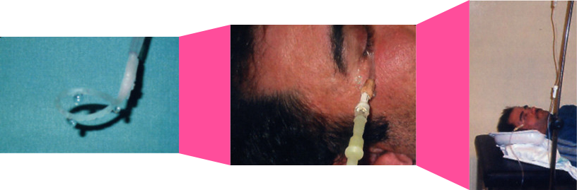
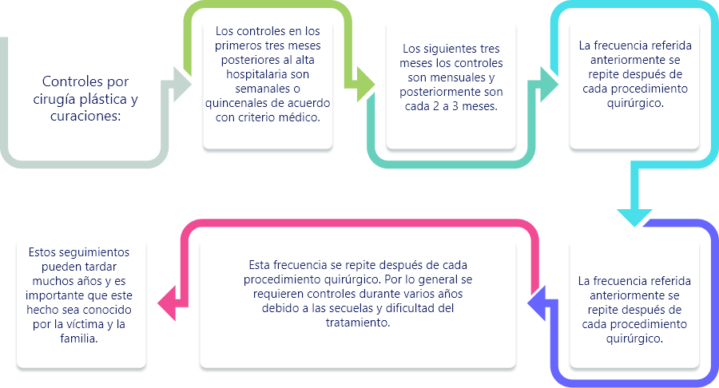

Introducción
Existen más de 25 mil químicos utilizados en la industria, agricultura, limpieza del hogar, entre otros, que pueden causar quemaduras, estas representan del 3 al 10% en humanos y representan hasta un 30% de mortalidad.
Es fundamental diferenciar la quemadura por agentes químicos de otros tipos de quemaduras, especialmente porque en pocos minutos de contacto con la piel o los ojos, pueden generarse daños irreversibles y porque teniendo en cuenta el mecanismo de lesión, el tiempo de exposición puede llegar a ser incluso de días.
Todas las víctimas por agentes químicos deben recibir una atención integral en salud, en la cual se consideran los componentes de atención médica, psicológica, socio familiar, así como la activación de las redes de justicia y protección.
En esta unidad se revisarán los temas relacionados con la atención integral en salud en los diferentes momentos de atención de las víctimas.
1. Marco conceptual quemaduras por agentes químicos
1.1 Generalidades sobre los químicos utilizados en los ataques
Los químicos se pueden clasificar según su mecanismo de acción o su mecanismo de lesión.
Según su mecanismo de acción, los químicos se clasifican en: ácido, bases (álcalis), soluciones orgánicas, soluciones inorgánicas.
Mecanismo de acción
Dadores de protones Liberan iones de hidrógeno y reducen el pH por debajo de 7 Si pH< 3 necrosis de coagulación
Receptores de protones Si pH > 11,5 necrosis de licuefacción
Disuelven membrana lipídica celular Producen disrupción de la estructura proteica celular
Daño tisular por unión directa y formación de sales La lesión se acompaña de exotermia (liberación de calor)
Según su mecanismo de lesión, los ácidos se clasifican en: los que causan oxidación, reducción, corrosión, veneno protoplasmático, vesicante y desecante.
Efecto
Añade a la proteína un átomo de oxígeno, sulfuro o un átomo halógeno[27]
Une electrones libres a la proteína Generalmente causa calor: efecto mixto
Al contacto causa desnaturalización de las proteínas
Formación de ésteres con la proteína
Isquemia y necrosis anóxica en sitio de contacto
Deshidrogenación de los tejidos Producción de calor (reacción exotérmica)
Ejemplos
Hipoclorito de sodio, Permanganato de potasio y Ácido crómico
Ácido clorhídrico, Ácido nítrico y Ácido crómico
Fenoles, Hipoclorito de sodio, Fósforo blanco
Ácido fórmico, Ácido acético Unión o inhibición del calcio u otros iones orgánicos, Ácido oxálico, Ácido hidrofluórico
Gas mostaza, DMSO- Dimetil sulfóxido
Ácido sulfúrico,Ácido muriático
Según su mecanismo de lesión, los álcalis se clasifican en: los que causan saponificación de grasas, acción higroscópica y necrosis de licuefacción.
Características
Destruye la barrera natural que los lípidos proveen y causan reacciones exotérmicas.
Extracción del agua de las células lesionadas causando daño y muerte celular
Disuelven las proteínas de los tejidos y forman proteinasas alcalinas, formando iones hidroxilo que causan necrosis de licuefacción en los tejidos.
En Colombia, los químicos más utilizados son los ácidos y entre ellos, el ácido sulfúrico, nítrico, muriático y ácido clorhídrico. También se han utilizado los álcalis como la cal, el hidróxido de sodio y el hidróxido de potasio, presentes en soluciones de limpieza doméstica.
Las características de los principales químicos utilizados en las agresiones se describen en la siguiente tabla:
| Nombre | pH | Procedencia | Características clínicas |
| Ácido Sulfúrico |
ácido | Ácido de Baterías Talleres |
|
| Ácido muriático, hidroclórico y clorhídrico | ácido | Producto de limpieza de fachadas. Distribuidora de productos químicos |
|
| Hidróxido de sodio | álcali | Soda cáustica, lejía |
|
| Ácido nítrico | ácido | Distribuidora de productos químicos |
|
| Ácido fluorhídrico | ácido | Distribuidora de productos químicos |
|
| Ácido fosfórico | ácido | Distribuidora de productos químicos |
|

En Colombia, los principales químicos utilizados para las agresiones son los ácidos, especialmente el ácido sulfúrico que se puede encontrar en el ácido de las baterías, el ácido nítrico que se obtiene en distribuidoras de productos químicos, el ácido muriático y clorhídrico que se pueden encontrar en productos de limpieza de fachadas y en distribuidoras de productos químicos.
1.2 Fisiopatología de las quemaduras por químicos
Las quemaduras químicas difieren de otros tipos de quemaduras (térmicas, eléctricas o por radiación) principalmente por su tiempo de exposición que puede llegar a ser de varios días, por el tipo de desnaturalización proteica que provoca (hidrólisis y necrosis de licuefacción) y porque se asocia a otros efectos como la toxicidad sistémica y la quemadura térmica secundaria a la reacción exotérmica.
A diferencia de otros tipos de lesión, en las quemaduras químicas el tiempo de exposición puede llegar a ser de varios días.
Los principales órganos afectados en las agresiones químicas son aquellos de contacto directo: la piel y los ojos.
Lesión cutánea:
Si el agente en un ácido, la necrosis dérmica inicia tan pronto la sustancia entra en contacto con la piel y puede llegar a comprometer incluso los tejidos más profundos.
Estudios realizados in vitro determinaron que en 5 minutos el ácido es capaz de producir una lesión irreversible, una rápida penetración y un severo daño de las capas profundas de la piel.
Fuente imagen.
Mujer de 28 años con quemaduras con ácido sulfúrico, de Gaviria-Castellanos, J.L., Gómez-Ortega, V., & Gutiérrez, P.. (2015), Quemaduras químicas por agresión: características e incidencia recogidas en el Hospital Simón Bolívar
estudios realizados in vitro determinaron que en 5 minutos el ácido es capaz de producir una lesión irreversible.
Este tipo de lesiones siempre son una urgencia, se debe intervenir de manera inmediata para disminuir la posibilidad de contacto de la sustancia química con la piel y los ojos.
Lesión ocular:
El contacto con el químico genera un daño importante del epitelio superficial, la córnea y la cámara anterior del ojo que pueden causar pérdida unilateral o bilateral de la visión. La lesión ocular por químicos ocurre por fases.
La fase aguda o inmediata ocurre en el momento del ataque y se caracteriza por necrosis del epitelio corneal y conjuntival con invasión química de las estructuras profundas.
Otras complicaciones frecuentes son: entropión, ectropión y catarata.
Las lesiones más severas se presentan con los álcalis observándose hiperemia conjuntival, edema, quemosis, y opacificación de la córnea por lo que la víctima experimenta dolor severo, epífora y fotofobia.
Si la agresión es por un ácido se producen lesiones más focales y menos severas debido a que el ácido produce una necrosis de coagulación con precipitación de las proteínas hacia la superficie creando una barrera al daño de los tejidos profundos.
Las lesiones oculares por agentes químicos se dividen en 4 grados según la gravedad del efecto cáustico.
| Lesión | Daño tisular | |
| Grado I | Lesión del epitelio corneal | Conjuntiva no isquémica |
| Grado II | Córnea deslustrada Detalles del iris visibles I |
squemia del limbo: < 33% |
| Grado III | Pérdida epitelial total Estroma borroso Detalles del iris poco visibles |
Isquemia del limbo: 33 a 50% |
| Grado IV | Opacidad de la córnea | Isquemia del limbo: > 50% |
Tabla 6 de la resolución 4568 de 2014.
las lesiones oculares más severas se presentan con los álcalis.

2. Primeros auxilios en el lugar de la agresión (comunidad)
Introducción
La atención a las víctimas por lesiones con agentes químicos se debe iniciar en el lugar de la agresión, se trata de intervenciones de primeros auxilios brindadas inicialmente generalmente por la comunidad, es importante que todas las personas estén familiarizadas con estas acciones con el fin de garantizar una atención de calidad como primer respondiente desde el momento de la agresión y de esta manera disminuir la posibilidad de secuelas.
También es importante tener en cuenta las medidas de seguridad de la escena y de bioseguridad con el fin de proteger a los auxiliadores y evitar así nuevos lesionados.
2.1 Avise
Quien tenga conocimiento del hecho deberá llamar a la línea 123 o a la línea de atención de emergencias que corresponda teniendo en cuenta el municipio de ocurrencia de los hechos.
En la llamada se deberá indicar:
Sitio de ocurrencia de los hechos.
Indicar brevemente la situación informando: tiempo, personas afectadas y estado de estas (inconsciente, no respira, no se mueve, etc.
Esperar las instrucciones del operador de la línea de emergencias.
Es importante tener claridad de la línea de atención de emergencias de su municipio.
2.2 Proteja
En la llamada se deberá indicar:
Evalúe las condiciones de seguridad de la situación antes de intervenir, tales como presencia aún del agresor, vehículos que supongan un riesgo para la víctima y el auxiliador, entre otras situaciones amenazantes.
No toque ninguna superficie o el cuerpo de la víctima sin protección. Tome las medidas de precaución necesarias, póngase guantes de nitrilo, bata y gafas (si llega a contar con estos).
Debe tomar las medidas de precaución necesarias antes de tener contacto con la víctima: evaluar la seguridad de la escena e idealmente ponerse guantes, bata y gafas.
2.3 Atienda
Preséntese ante la víctima y exprésele que está para ayudarle: diga su nombre y el de la institución a la cual pertenece (en caso de que pertenezca a la policía, bomberos, defensa civil).
Actúe con calma.
Prepárese para el evento de que la víctima quiera salir corriendo ya que el dolor, la angustia y el temor pueden impulsarlo a hacerlo.
El paciente debe ser retirado del lugar donde ocurrió la emergencia.
Se retiran los objetos metálicos y las prendas de vestir, excepto las que estén adheridas a la piel, teniendo precaución de no dispersar el agente químico en otras partes del cuerpo de la víctima que no han sido afectadas.
Se debe considerar la intimidad y pudor de las personas al retirar las prendas, al igual que la preservación de estas para las investigaciones de las autoridades judiciales.
En el momento de retirar las prendas se debe tener la precaución de no dispersar el agente químico en partes de la víctima que no han sido afectadas, también es importante como auxiliador evitar entrar en contacto con la sustancia sin las medidas de bioseguridad ya que también puede salir lesionado.
3. Atención prehospitalaria (ambulancias – profesionales de la salud)
Introducción
La atención inicial del lesionado en el lugar del evento por parte de los profesionales de la salud tiene como objetivos principales: estabilizar a la víctima e interrumpir el contacto con el agente químico lo antes posible, esto teniendo en cuenta que en pocos minutos el agente químico puede llegar a capas profundas de la piel y los ojos dejando lesiones irreversibles.
Teniendo en cuenta la posibilidad de esparcir el agente químico a zonas no afectadas en el momento de retirar la ropa de la víctima y en el momento de realizar el lavado, se debe tener especial cuidado en estos procedimientos.
En todos los casos los auxiliadores deben recordar la importancia de su propia seguridad para evitar ser un lesionado más.
3.1 Evaluación inicial ABCDE
Se debe realizar una evaluación inicial ABCDE, con el fin de identificar lesiones que pongan en riesgo la vida de la víctima.
Evaluación inicial
Al llegar a urgencias, toda víctima de agresión por químicos debe evaluarse rápidamente siguiendo la secuencia ABCDE (términos en inglés).
VÍA AÉREA (AIRWAY)
VENTILACIÓN (BREATH)
CIRCULACIÓN (CIRCULATION)
DÉFICIT NEUROLÓGICO (DISABILITY)
EXPOSICIÓN Y CONTROL DE HIPOTERMIA (EXPOSURE)
3.2 Definir fuente de agua
Comprobar si dispone de una llave o una ducha de agua potable para realizar el lavado.
Dependiendo del lugar de la agresión, puede ser la ducha del hogar de la víctima, de un vecino o un establecimiento cercano.
Para este paso es útil haber activado a bomberos ya que ellos pueden asegurar un volumen adecuado y constante de agua, así como el manejo y disposición de las sustancias químicas.
3.3 Presentarse y tranquilizar
Preséntese ante la víctima y exprésale que está para ayudarle: diga su nombre y el de la institución a la cual pertenece (en caso de que pertenezca a la policía, bomberos, defensa civil).
Actúe con calma.
Prepárese para el evento de que la víctima quiera salir corriendo ya que el dolor, la angustia y el temor pueden impulsarlo a hacerlo.
las lesiones más graves son aquellas extensas presentadas en áreas especiales como los ojos, cara, cuello, manos, axilas, codos, muñecas y genitales.
Las lesiones del ojo son las más urgentes.
3.4 Protegerse
Tome las medidas de precaución necesarias para su protección. Póngase guantes de nitrilo, bata y gafas (si llega a contar con estos). No toque ninguna superficie y mucho menos el cuerpo de la víctima sin protección.
Cuando no se dispone de medios de bioseguridad:
En consenso de expertos la recomendación es que actúe con la máxima precaución para no convertirse en otra víctima más.
Al no tener los guantes de nitrilo, evite tocar a la víctima indicando que se retire la ropa de la zona afectada y si es posible que seque la zona rápidamente sin frotar. De inmediato, inicie la irrigación de las manos de la víctima (por contacto con el químico) así como las otras zonas afectadas.
3.5 Secado
Si la situación lo permite, seque rápidamente las áreas lesionadas con toallas absorbentes teniendo la precaución de no esparcir el químico a áreas corporales no comprometidas ni lesionar la piel.
3.6 Retirar ropa
Corte con tijeras y retire la ropa contaminada con el químico para evitar que la quemadura siga propagándose.
Retire también todas las pertenencias y guárdelos en bolsa negra adecuadamente para entregar al familiar.
Es importante retirar anillos, pulseras, aretes y collares ya que perpetúan el contacto del químico con la piel y pueden además provocar compresión de los tejidos quemados.
Es importante preservar las prendas y conservar la cadena de custodia (este procedimiento se profundizará en la unidad 3).
3.7 Irrigar y lavar
Irrigue con agua, de inmediato, en forma copiosa y continua, las áreas afectadas por un período de 20 a 30 minutos, para diluir y eliminar el químico.
Si es posible, aplique jabón (clorhexidina en solución acuosa al 0.2%, syndet o jabón líquido de tocador) deje 20 minutos y lave con agua sin frotar.
Procure que el agua esté ligeramente tibia, para evitar la hipotermia.
Tenga cuidado de no involucrar las áreas sanas. Las quemaduras poco extensas pueden ser lavadas durante más de 2 horas sin riesgo de producir hipotermia.
Debe continuar el lavado hasta que disminuya el dolor.
No sumerja en tinas, piletas, piscinas ya que el químico se disuelve en el agua y puede seguir quemando otras partes del cuerpo.
El lavado de las áreas afectadas debe iniciar lo antes posible y durar lo suficiente para retirar la mayor cantidad de agente químico y de esta manera disminuir la morbimortalidad asociada.
3.8 Lavado ocular
Si la víctima tiene compromiso de los párpados y/o del ojo, inicie prioritariamente el lavado del ojo, idealmente con lactato de Ringer o con agua sin retrasar el lavado de otras áreas (lavado simultáneo).
Dispositivo de irrigación ocular y colocación para el correcto lavado ocular
Tiras reactivas para medir pH
Medida de pH en fondo de saco
Mediremos el pH en el fomix, mediante tiras reactivas, y si éste no es próximo a 7 continuaremos con el lavado.
Se puede iniciar el lavado en simultáneo del ojo y de las áreas de la piel afectada con el fin de disminuir el contacto con el agente químico.
3.9 Cubrir
Cubra a la víctima con una bata cuando haya finalizado el lavado continuo (mínimo tres ciclos de irrigación, jabón, irrigación) o cuando llegue la ambulancia para transportar la víctima al centro de atención médica.
No deje a la víctima desnuda.
3.10 Traslado
Llevar a la víctima al hospital más cercano de la zona para que reciba la atención de urgencias.
Cuando el agente químico no es líquido: Inhalación: una vez se encuentren en la ambulancia, ponga oxígeno húmedo al 100%.
Ingesta: no inducir el vómito, no dar agua ni ninguna otra bebida. Se puede realizar el lavado dentro de la boca, haciendo buches con jabón y agua, sin deglutir. Repita este procedimiento.
Químico en polvo: retire todas las partículas o fragmentos de la sustancia química, con un cepillado suave ya que estas pueden tener una reacción de calor al contacto con agua y producir mayor lesión. Una vez retire estas partículas inicie el lavado.
Todas las acciones a realizar están enfocadas en disminuir el contacto del agente químico con la piel y los ojos, se debe evitar propagar la sustancia por las áreas no afectadas, se debe evitar que el auxiliador resulte lesionado por no usar las medidas de protección adecuadas.
Es tan importante saber lo que se debe hacer como lo que NO se debe hacer.
La irrigación copiosa con agua de la zona atacada por el químico es la primera y más importante acción a realizar en los primeros auxilios ya que permite..
Diluir y remover el químico
Retorno del pH a nivel normal
Suprimir cualquier metabolismo tisular/ elevado
Atenuar la reacción química
Suprimir la acción higroscópica
Acción anti inflamatoria
4. Atención en el servicio de urgencias
Introducción
La atención en urgencias implica un cierto número de acciones que se van de forma simultánea y que involucran a los profesionales y personal de apoyo que se encuentra en un servicio de urgencias
4.1 Triage
Las víctimas de ataques con agentes químicos deben ser clasificadas como de máxima prioridad (Triage I) y ser ingresadas para evaluación y lavado en forma inmediata.
4.2 Evaluación inicial ABCDE
Se debe realizar una evaluación inicial ABCDE, con el fin de identificar lesiones que pongan en riesgo la vida de la víctima.
VÍA AÉREA (AIRWAY)
VENTILACIÓN (BREATH)
CIRCULACIÓN (CIRCULATION)
DÉFICIT NEUROLÓGICO (DISABILITY)
EXPOSICIÓN Y CONTROL DE HIPOTERMIA (EXPOSURE)
4.3 Irrigación - lavado - curación inicial
El lavado debe realizarse siempre en urgencias, independientemente si se llevó a cabo en el lugar de la agresión, con el fin de continuar la remoción del agente químico.
Este paso es clave y debe realizarse lo más pronto posible, de ahí que la evaluación inicial y el lavado son simultáneos y depende del criterio médico priorizar su orden.
el lavado se debe realizar siempre en urgencias, incluso si fue realizado en la atención pre hospitalaria, esto con el fin de continuar la remoción del agente químico, se debe realizar la evaluación inicial y el lavado de manera simultánea.
1. Evitar la hipotermia: el lavado debe ser realizado en un lugar con temperatura ambiente controlada (puertas y ventanas cerradas), utilizando agua a temperatura corporal y protegiendo la intimidad de las personas que no estén directamente involucradas en el procedimiento.
2. Utilizar jabón adecuado: la recomendación es Clorhexidina en solución acuosa al 0.2% o syndet. NO utilice jabón con yodopovidona.
3. Monitorizar acidez de las áreas quemadas: se debe evaluar con tirillas de pH con el fin de establecer hasta qué momento se continúa con el lavado para lograr un pH neutro.
4. Utilizar el equipo adecuado: la institución debe contar con equipo de bioseguridad y el instrumental adecuado para realizar el lavado.
La irrigación copiosa con agua de la zona atacada por el químico es la primera y más importante acción a realizar en los primeros auxilios ya que permite..
Diluir y remover el químico
Retorno del pH a nivel normal
Suprimir cualquier metabolismo tisular/ elevado
Atenuar la reacción química
Suprimir la acción higroscópica
Acción anti inflamatoria
4.4 Analgesia
Las quemaduras químicas son muy dolorosas y deben ser manejadas con opioides. Se recomienda usar uno de los que se encuentran en la siguiente tabla, la morfina es la sustancia más recomendada.
| Analgésico | P¨resentación | Dosis |
| Morfina | Ampolla por 10mg | 0.05 a 0.1 mg x kg diluido cada 4 a 6 hras |
| Meperidina | Ampolla por 100mg | i mg x kg distribuido cada 6 horas |
| Tramadol | Ampolla por 50mg | i mg x kg cada 6 horas |
Los antibióticos NO deben iniciarse de manera rutinaria o “profiláctica” en urgencias a menos que haya una indicación para su prescripción.
4.5 Manejo de quemadura en ojos
Los ataques con agentes químicos suelen dirigirse hacia la cara afectando con frecuencia los ojos, esto corresponden en términos porcentuales de un 30 a 50%.
El manejo ocular debe iniciarse en el lugar de la agresión y continuar en urgencias mediante irrigación continua con Lactato de Ringer por períodos de 30 minutos evaluando el pH entre cada irrigación en caso
de que se cuente con la cinta para medir pH. Las tiras que se utilizan en los laboratorios clínicos para análisis de orina pueden servir para este fin.
Si no se cuenta con la cinta continuar la irrigación ocular hasta la remisión a un nivel de complejidad mayor o hasta que el concepto del oftalmólogo indique lo contrario si se cuenta con este.
Dispositivo de irrigación ocular y colocación para el correcto lavado ocular
Tiras reactivas para medir pH
Medida de pH en fondo de saco
Mediremos el pH en el fomix, mediante tiras reactivas, y si éste no es próximo a 7 continuaremos con el lavado.
Valoración inmediata por oftalmología:
Debe incluir evaluación con lámpara de Wood, medición de la presión intraocular y el examen con fluoresceína.
Debido al dolor intenso que provocan estas quemaduras puede ser necesario utilizar anestésico local: proparacaína al 0,5%, si no se dispone de este utilizar lidocaína al 2% sin epinefrina.
Si el dolor es intenso puede adicionarse un analgésico oral o parenteral para realizar la evaluación ocular.
Si a pesar del anestésico y analgésico, la víctima no consigue abrir los párpados será necesario utilizar retractores palpebrales, para realizar la irrigación y la evaluación.
Está contraindicado el uso de fenilefrina porque aumenta la lesión isquémica de las estructuras profundas.
Si durante el examen se encuentran partículas extrañas, el especialista deberá removerlas utilizando un hisopo o aplicador con punta de algodón.
Si la institución no cuenta con especialista en oftalmología, deberá registrarse en la historia clínica y en el resumen de la remisión, para que la evaluación pertinente se realice tan pronto llegue la víctima a la unidad especializada.
4.6 Evaluación de las quemaduras
Una evaluación adecuada de la lesión implica determinar:
La profundidad o grado
La extensión
El patrón de las quemaduras
Imagen: patrón de presentación quemadura química por agresión. Fuente. Gaviria-Castellanos, J. L., Gómez-Ortega, V., Gutiérrez, P. (2015).
Características de la quemadura según agente químico.
| Agente químico | Características de la quemadura |
| Ácido sulfúrico | Escara negra, seca y muy adherida. El ácido reacciona con la piel generando gran cantidad de calor lo que causa, además de la quemadura química, una lesión térmica y un dolor intenso. |
| Ácido Nítrico | Escara de color amarillo-naranja. Es una quemadura muy profunda. |
| Ácido fórmico | Escara café oscura. |
Debe quedar registro de la distribución y localización de las áreas quemadas en el formato de corpograma.
Para realizar un manejo adecuado de las quemaduras por agentes químicos es importante conocer la extensión de esta, por lo cual se recomienda tener presente “regla de los 9” y el “método de la palma”.
Imagen: corpograma
4.7 Referencia unidad de quemados
Una vez se realice la atención de urgencias y conforme al criterio del médico tratante, las víctimas de quemaduras químicas deben ser remitidas a la unidad de quemados o a la IPS de alta complejidad más cercana que cuente con profesionales especializados en atención a quemados, para asegurar el tratamiento adecuado y minimizar la morbimortalidad asociada a estas agresiones.
Toda quemadura por agentes químicos debe ser evaluada por profesionales especializados, ya sea en una unidad de quemados o en una institución especializada en esta atención.
La referencia es realizada por las centrales de referencia de la institución donde está siendo atendida la víctima, teniendo en cuenta la normatividad vigente.
El traslado se debe realizar únicamente cuando:
Se haya notificado a la institución receptora y esta acepte.
La víctima esté hemodinámicamente estable.
La vía aérea esté asegurada.
Cómo realizar el traslado:
Para minimizar las complicaciones, durante el traslado se debe garantizar:
Cabecera elevada a 30 grados para limitar la formación de edema facial.
Todas las áreas quemadas cubiertas con gasas humedecidas con lactato de ringer.
En las quemaduras en manos y pies se deben separar los dedos con gasas, manteniendo elevado el miembro afectado para disminuir el edema.
Extremidades quemadas elevadas por encima del tórax.
Protección contra la hipotermia cubriendo a la víctima con sábana y cobija, y controla la temperatura del medio de transporte.
para realizar el traslado la víctima debe estar estable hemodinámicamente y con vía aérea asegurada. Se debe trasladar teniendo en cuenta todas las medidas para evitar que aumente el edema en el área o áreas afectadas, se debe mantener el aporte de líquidos.
Se debe realizar un monitoreo constante de los siguientes parámetros:
Vía aérea: garantizar oxigenoterapia si lo requiere.
Circulación: asegurar dos (2) vías periféricas de grueso calibre manteniendo la infusión de líquidos previamente calculados (lactato de ringer: 4cc x kg x % de superficie corporal quemada).
Diuresis: la infusión de líquidos debe asegurar una diuresis mayor 0.5 ml/kg/hora. Para poder asegurar este monitoreo debe colocarse sonda vesical.
Monitorización electrocardiográfica.
Monitorización de presión arterial.
5. Unidad de quemados y manejo ambulatorio
Introducción
El manejo especializado en la unidad de quemados es fundamental para disminuir la morbi-mortalidad asociada a las quemaduras por agentes químicos.
En la unidad de quemados se define el lugar de tratamiento, se inicia el manejo interdisciplinario teniendo en cuenta las necesidades particulares de cada víctima.
Con relación al manejo ambulatorio, se deben garantizar los controles pertinentes por cirugía plástica, así como las curaciones necesarias, el proceso de rehabilitación y el seguimiento por salud mental y trabajo social.
Se debe evitar cualquier tipo de obstáculo para que las víctimas accedan a su tratamiento integral.
5.1 Criterios para el manejo ambulatorio u hospitalización
Dentro de las acciones que realiza el equipo de salud de las unidades de quemados se encuentran:
Nueva evaluación de las circunstancias de la agresión (mecanismo y momento).
Examen físico completo, de cabeza a pies, reevaluando permanentemente el ABCDE y valorando la presencia de otras lesiones no detectadas en urgencias.
Identificación del compromiso ocular y valoración por oftalmología.
Definición del lugar del tratamiento: con base en la valoración clínica y paraclínica el equipo especializado define si la víctima se hospitaliza o si puede recibir un tratamiento especializado.
La primera curación debe ser siempre realizada en la unidad de quemados.
Identificación de factores de riesgo tanto en los antecedentes como en las circunstancias de la agresión.
Evaluación de las quemaduras estableciendo su grado de profundidad y extensión. La distribución y localización de las áreas quemadas deben quedar registradas en un nuevo corpograma diferente al realizado en urgencias.
Evaluaciones paraclínicas pertinentes según los estándares de la Unidad de quemados.
Si se establece que la quemadura puede ser tratada de forma ambulatoria, es importante que la víctima y sus familiares tengan claro con qué frecuencia y en dónde deben realizarse estas curaciones.
| ATENCIÓN HOSPITALARIA | ATENCIÓN AMBULATORIA |
| Quemadura en cara, cuello, manos, pies, genitales y pliegues de flexión (áreas especiales) | Quemadura con patrón de salpicadura, disperso, poco extenso |
| Signos de toxicidad sistémica | Quemadura GI o GII superficial |
| Compromiso de vía aérea Quemaduras de espesor parcial profundo o de espesor total (Grado II o Grado III- Tabla 8) Quemadura de patrón continuo Edad en extremos de la vida |
Sin compromiso de áreas especiales Sin compromiso de vía aérea |
| Quemaduras de espesor parcial profundo o de espesor total (Grado II o Grado III- Tabla 8) | |
| Comorbilidades | |
| Riesgo de una nueva agresión |
en la unidad de quemados se realiza nuevamente una evaluación completa del estado general de la víctima, la extensión y profundidad de las quemaduras. Se define el lugar del tratamiento, en caso de estar indicado el manejo ambulatorio la primera curación se debe realizar en la unidad de quemados.
5.2 Manejo interdisciplinario
El tratamiento integral hospitalario debe incluir un equipo multidisciplinario básico para la atención de víctimas de ataques con agentes químicos, los profesionales de este equipo son:

Cirugía plástica.
Salud mental (psiquiatría y/o psicología).
Trabajo social.
Rehabilitación (fisiatría, fisioterapia, terapia ocupacional).
Según la localización de la quemadura, las características de la víctima, puede ser necesaria la intervención de otros profesionales, las especialidades que con mayor frecuencia participan en la atención de estas víctimas son:
Pediatría: en todo menor de 15 años sin importar la extensión o profundidad. Es importante descartar maltrato infantil en esta población.
Otorrinolaringología: si hay compromiso del conducto auditivo externo y del oído medio, y/o cuando el paciente presenta compromiso severo de la estructura nasal.
Cirugía de mano: en caso de lesiones profundas de mano.
Microcirugía: cuando se requiere realizar una cirugía reconstructiva en la cual la junta médico-quirúrgica de cirugía plástica considera que esta es la mejor opción.
Oftalmología: siempre que haya sospecha de compromiso del globo ocular o estructuras perioculares como: párpados, conducto y glándula lacrimal.
Cirugía general: en todos los casos en los cuales la agresión estuvo asociada a ingesta de agentes químicos o si existe sospecha de compromiso de la vía digestiva. También se requiere en los casos severos con compromiso vascular periférico y lesiones de las estructuras profundas del cuello.
Medicina interna: en caso de comorbilidades previas como: hipertensión arterial, diabetes, cardiopatías, etc.,
Urología: en casos en donde la víctima presenta lesiones en genitales.
El manejo de una víctima por agente químico siempre requiere de un equipo multidisciplinario básico que incluye profesionales de 4 áreas: cirugía plástica, salud mental, trabajo social y rehabilitación.
Los profesionales de otras especialidades serán requeridos teniendo en cuenta las necesidades y particularidades de cada víctima.
5.3 Rehabilitación física
La rehabilitación de la víctima se inicia en la fase postaguda, cuando la víctima y su familia ya han pasado el impacto emocional inicial y están viviendo la crisis frente a los cambios corporales de la víctima.
Los elementos básicos de esta rehabilitación son:
El ejercicio
El acomodamiento
El control del edema Y la órtesis
Es importante tener presente y explicar a la familia, que el proceso de recuperación si bien inicia durante la hospitalización, puede prolongarse por años, adaptándose a las necesidades relacionadas con los procesos quirúrgicos y los de la propia cicatrización.
El proceso de rehabilitación inicia en la fase postaguda de la lesión, pero puede durar varios años teniendo en cuenta la complejidad de los diferentes casos de quemaduras por agentes químicos.
5.4 Control y seguimiento ambulatorio
Es necesario tener en cuenta que la atención multidisciplinaria va más allá de la primera hospitalización e incluye atención por cirugía plástica como por salud mental.
Se debe realizar control y seguimiento ambulatorio de acuerdo con las necesidades de las víctimas, en todos los casos se debe garantizar control con cirugía plástica y salud mental.
La frecuencia de los controles por cirugía plástica inicialmente es semanal o quincenal durante los primeros tres meses, posteriormente es mensual por los siguientes tres meses y luego cada 2 o 3 meses teniendo en cuenta el criterio clínico. La frecuencia se repite después de cada procedimiento quirúrgico.
Glosario
Ácido:sustancia que en disolución aumenta la concentración de iones hidrógeno y que se combina con las bases para formar sales. (RAE, s. f.).
Álcali:compuesto que en disolución acuosa se comporta como una base fuerte. (RAE, s. f.).
Alcalino:dicho de una sustancia: que tiene las propiedades de un álcali. (RAE, s. f.).
Base:sustancia que en disolución aumenta la concentración de iones hidroxilo y se combina con los ácidos para formar sales. (RAE, s. f.).
Catarata:opacidad del cristalino del ojo que al impedir el paso de los rayos luminosos, dificulta la visión. (RAE, s. f.).
Cáustico-a:dicho de una cosa: Que quema y destruye los tejidos animales. Dicho de un medicamento: Que desorganiza los tejidos como si los quemase, produciendo una escara. (RAE, s. f.).
Corroer:dicho de un agente externo: Destruir paulatinamente un cuerpo metálico alterando o no su forma. (RAE, s. f.).
Corrosivo:que corroe o tiene la propiedad de corroer. (RAE, s. f.).
Disolución acuosa:disolución cuyo disolvente es el agua. (RAE, s. f.).
Ectropión:inversión hacia fuera del párpado inferior, originada generalmente por un proceso inflamatorio o paralítico. (RAE, s. f.).
Edema:hinchazón blanda de una parte del cuerpo, que cede a la presión y es ocasionada por la serosidad infiltrada en el tejido celular. (RAE, s. f.).
Entropión:inversión hacia dentro del borde del párpado inferior por contracción muscular o por retracción cicatrizal.(RAE, s. f.).
Epífora:lagrimeo copioso y persistente que aparece en algunas enfermedades de los ojos. (RAE, s. f.).
Escara:costra, ordinariamente de color oscuro, que resulta de la mortificación o pérdida de vitalidad de una parte viva afectada de gangrena, o profundamente quemada por la acción del fuego o de un cáustico. (RAE, s. f.).
Escarotomía para quemaduras profundas y circulares del tórax:la escarotomía es una incisión de toda la piel quemada (escara) hasta el tejido celular subcutáneo que se realiza a lado y lado del tórax y se extiende hasta medio centímetro de piel sana. Inmediatamente se descomprime el tórax y mejora la ventilación.
Tomado de: Resolución 4568 de 2014, Por la cual se adopta el ?Protocolo de atención de urgencias a víctimas de ataques con agentes químicos?. 16 Oct, 2014 Núm. 49325, página 29.
Fotofobia:intolerancia a la luz en afecciones irritativas del globo ocular y en jaquecas.(RAE, s. f.).
Hiperemia:abundancia extraordinaria de sangre en una parte del cuerpo.(RAE, s. f.).
Inorgánico, ca:dicho de una sustancia: Que no tiene como componente el carbono.(RAE, s. f.).
Irrigación:acción y efecto de irrigar.(RAE, s. f.).
Irrigar:introducir un líquido en alguna cavidad corporal.(RAE, s. f.).
Lavar:limpiar algo con agua u otro líquido.(RAE, s. f.).
Necrosis:degeneración de un tejido por muerte de sus células.(RAE, s. f.).
Orgánico, ca:dicho de una sustancia: Que tiene como componente el carbono y que forma parte de los seres vivos.(RAE, s. f.).
Quemadura:descomposición de un tejido orgánico, producida por el contacto del fuego o de una sustancia cáustica o corrosiva. (RAE, s. f.).
pH:índice que expresa el grado de acidez o alcalinidad de una disolución.(RAE, s. f.).
Rehabilitación:conjunto de métodos que tiene por finalidad la recuperación de una actividad o función perdida o disminuida por traumatismo o enfermedad.(RAE, s. f.).
Solución:ver disolución.(RAE, s. f.).
Syndet:la palabra syndet procede de la contracción de “synthetic detergent”. Técnicamente es la unión de distintos detergentes, llamados también tensoactivos o surfactantes. Los syndets están recomendados por la higiene de pieles sensibles ya que son mucho más suaves con la piel que un jabón tradicional.
Tomado de: Resolución 4568 de 2014, Por la cual se adopta el ?Protocolo de Atención de Urgencias a Víctimas de Ataques con Agentes Químicos?. 16 Oct, 2014 Núm. 49325, página 25.
Material complementario
| Nombre del documento o material. | Tipo de material. | Enlace del Recurso. |
|---|---|---|
| Protocolo de atención a pacientes víctimas de agresión con químicos, 2020, (03:15–05:21) | Vídeo | ver |
| Carretero, G. M. (s. f.). Quemaduras oculares térmicas y químicas [Imagen]. Complejo hospitalario Torrecárdenas. | Artículo | ver |
| Resolución 4568 de 2014, Por la cual se adopta el Protocolo de Atención de Urgencias a Víctimas de Ataques con Agentes Químicos. 16 Oct, 2014 Núm. 49325 | Protocolo |
Referencias bibliográficas
Carretero, G. M. (s. f.). Quemaduras Oculares Térmicas y Químicas [Imagen]. Complejo Hospitalario Torrecárdenas. https://www.torrecardenas.eloculista.es/index.php/oftalmologia/articulos-ugc-oftalmologia/19-articulos-de-polo-anterior/65-quemaduras-oculares-termicas-y-quimicas
Gaviria-Castellanos, J. L., Gómez-Ortega, V., & Gutiérrez, P. (2015). Quemaduras químicas por agresión: características e incidencia recogidas en el Hospital Simón Bolívar, Bogotá, Colombia. Cir. Plást. Iberolatinoam, 40(1), 73–82: http://scielo.isciii.es/scielo.php?script=sci_arttext&pid=S0376-78922015000100009
Ministerio de salud y protección social. (s. f.). protocolo manejo ataques acido Minsalud. https://www.minsalud.gov.co/sites/rid/Lists/BibliotecaDigital/RIDE/VS/PP/protocolo-manejo-ataques-acido-minsalud-2014%20(2).pdf
RAE. (s. f.). Real Academia Española. https://www.rae.es/.
Resolución 4568 de 2014, Por la cual se adopta el Protocolo de Atención de Urgencias a Víctimas de Ataques con Agentes Químicos. 16 Oct, 2014 Núm. 49325.
Protocolo de Atención a Pacientes Víctimas de Agresión con Químicos. (2020, 20 marzo). YouTube. https://www.youtube.com/watch?v=BUdR6IeMq6Q&feature=youtu.be
ZAPATA MENDO, PERCY, Y. (2019). FISIOTERAPIA EN PACIENTES QUEMADOS [Imagen]. Fisiocampus. https://www.fisiocampus.com/articulos/fisioterapia-en-pacientes-quemados
Fotografías y vectores tomados de https://www.shutterstock.com/ y https://www.freepik.es/
Licencia Creative Commons
CC BY-NC-SA
Ver licencia.